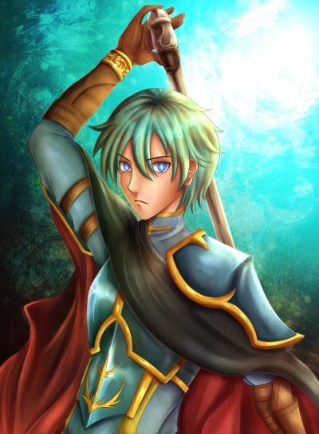
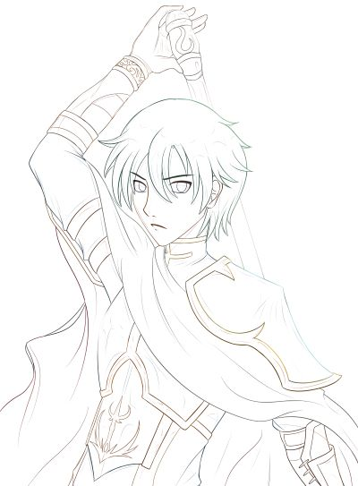
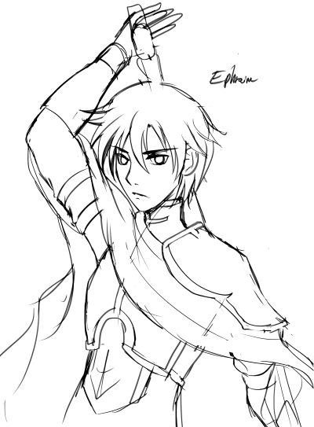

Stages of Marlie's Art
All art produced in Clip Studio Paint with an XP-Pen 16 Pro tablet.

Art Progress
As an artist, I frequently find myself recreating art from a wide assortment of media I often engage with--especially video games. Displayed on this page is the character, Ephraim, from Fire Emblem the Sacred Stones, originally designed by Wada Sachiko.
All my art begins with a rough sketch which serves as the outline for the clean lineart. The lineart stage is what takes me the longest, as getting the lines and form correct is often a tedious task. However, once that stage is complete, I am rewarded with what I'd consider to be the more relaxing part of the art progress: rendering. I color in the line art with flat colors, and soon after I use a mix of an airbrush and blur pen to give my coloring a painting-esque look. At the end, I play around with a bunch of different filters and fix any errors. Typically, a piece like the one on this page can take me up to seven hours to complete!

Inspirations

Growing up, I was an avid gamer. I admired seeing all the unique designs each character possessed, which sparked my love for creating character designs of my own. I would often place a paper over my computer as a makeshift light table, and then trace over artwork. While I thankfully grew out of my 10-year old tracing habits, doing that everyday helped reinforce my style.
Sachiko's rendering style was a huge inspiration for how I do my own coloring, but there are dozens of more video game artists who I give credit for inspiring me to make my own art.